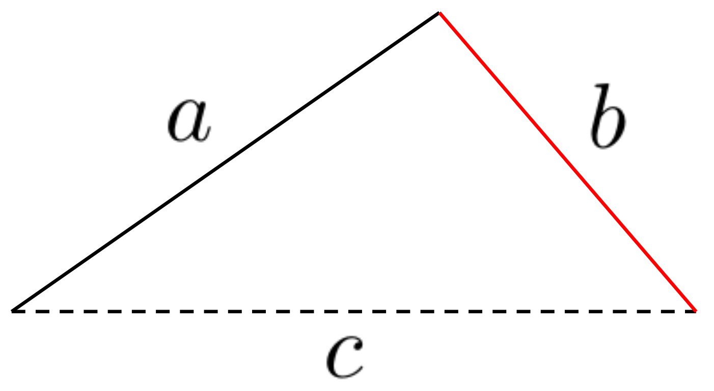
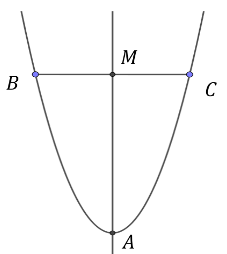

Section 2.4 Our advice, a synopsis
There are times when I feel like I’m in a big forest and don’t know where I’m going. But then somehow I come to the top of a hill and can see everything more clearly. When that happens it’s really exciting.―Maryam Mirzakhani (1977–2017)
If you see a whole thing — it seems that it’s always beautiful. Planets, lives . . . But up close a world’s all dirt and rocks. And day to day, life’s a hard job, you get tired, you lose the pattern.―Ursula K. Le Guin (1929–2018)
In order to solve a problem, any problem, you must:
- Have an idea.
-
Solving a mathematical problem is a bit like getting dropped in the woods without a map or any GPS technology and being told to find your way out. First you have to find a path. Once a path is found, you have to follow it. Nothing else really has a chance of working. Following your path will eventually lead you to another path. Now you have to decide which path to follow, so you look around and make your best guess. If you guess right, great! If not you will have to backtrack and take the other path. And so it goes. Guess. Backtrack. Guess again. As you learn the terrain and get familiar with the network of paths your guesses get better. Sometimes none of the paths you’ve found seem to be getting you closer to your destination. So you have to try something different, like getting off of the path completely.Eventually you’ll get where you’re going but the one thing you can’t do is give up. You will never get anywhere if you don’t keep trying.Having an idea is like following a path in the woods. It’s a start, but that’s all it is. You still have to follow it. After you’ve taken it as far as you can you need to look for another idea; a new path to follow.Finding your way out of the woods takes patience, diligence, and a lot of hard work. So does solving a mathematics problem. Except, of course, that you won’t die of exposure if you don’t solve the math problem.If an idea occurs to you, follow it. Most likely you will not hit on a good, or even a workable approach the first time. Or the first three times. That’s OK. Keep thinking about the problem anyway. It is frustrating and it doesn’t feel like progress, but it is. As long as you are having and discarding ideas you are making progress.
- Really, have an idea. If you don’t have a good idea, then use a bad one.
-
OK, we hear you say, but what if I don’t have any good ideas? What do I do then?Easy. Use a not-so-good idea. Guess if you have to.This is what you’ve been doing all of your life anyway isn’t it? You just didn’t tell anyone because you were sure you were doing something wrong, right? You weren’t.The most important thing you can do is get started. That’s what having an idea is for, getting started. All we did to start the problem in Example 2.3.1 was draw the lines \(a\) and \(b\text{.}\) Look back up at our partial solution and see. The first thing we did was make the drawing below:

Can you think of anything more simple-minded? And yet it worked. It didn’t work right away, but it got us moving in the right direction. - Have another idea.
-
Because this is a textbook we couldn’t really waste time and pages by running down blind alleys, so we started off with an idea that we knew would take us in the right direction. In real life this usually won’t happen. Most often your first (two or three or four) ideas aren’t going to take you in the right direction. That’s OK. Figure out what is wrong with them. You had some intuition about the problem that led you to your idea. Figuring out why it didn’t work will clarify things for you just a bit. That will help.So, have another idea that is based on what you learned from your first idea. And another. And another after that. Keep having ideas until you find one that works. Another way to say this is: Don’t give up.
- Ask for help when you get stuck, not before.
-
Sometimes ideas just won’t come to you. That’s OK. Sometimes you will need help. Ask for it. Ask your teacher, another student, a tutor, your Mom, your Dad, a former teacher. Ask. For. Help.But ask constructively. If you are asking another student, a peer, it is fine to ask, “How do I do this problem?” But if you are asking your teacher, or a tutor, this sounds a lot like, “This problem looks hard, my friends are meeting up in half an hour and, besides, I don’t really want to spend any more time on it. Please, do this problem and let me watch so I can turn it in and go have fun with my friends.” This is not usually effective. Moreover some teachers will get a little testy about it. Instead ask something like, “I’ve tried this, and this, and this, but I keep getting stuck here. Can you give me some direction?” That shows that you have already put real effort into solving the problem and are willing to continue working on it.To be clear, your teacher knows that a serious student does not mean this, that you really just want to learn how to do the problem. The difficulty is that there are always some students who have no qualms about asking their instructor to do problem after problem with no intention of learning anything. They just want to copy the answers down and quit. Teachers quickly learn to identify these students from the way they ask questions. If you approach your instructor in the same fashion that a non-serious student does the response you get won’t be as helpful as you would like. Teachers want to help serious students, but non-serious students are a waste of time. Be a serious student. Just as importantly, act like a serious student.Finally, if you find the problem so mystifying that you can’t even think of a first idea ask, “I really don’t know where to begin on this problem. Can you point me in the right direction to get me started?”
- Keep thinking about the problem after you solve it.
-
After you’ve solved a problem, pause for a moment, take a sip of coffee, or tea, or whatever, and think about the problem you just solved. This is like the difference between looking at a mountain from its base, when all you can see is the tangle of brush in your way, and looking at it from the peak. From the peak all of the obstacles you overcame getting there look small and unimportant. You can see the broad outlines of the mountain and the path you took climbing it. Frequently you will also see a better path than the one you took.This kind of reflection is the most neglected aspect of problem solving. After you’ve been struggling with a problem you probably don’t ever want to see it again. This is a natural response. However, before you put the problem away reflect on your solution and make this part of your knowledge base. Think about the ideas you had that worked, and the ideas you had that didn’t work. Think about why they did, or didn’t work. Do this immediately, while the problem is still in your mind. Later, if something reminds you of this problem, think about it some more to see why you were reminded of it.The difference between the teacher and the student is not intelligence, but experience. The more problems you solve, the more experience you gain. But you need to be able to use that experience for subsequent problems. Reflecting on a problem after you solve it is how you make the knowledge you gained from the problem available for later use.For example, see if you can use what you learned from the triangle problem to solve Drill 2.4.1.
- Use your intuition, but don’t trust it.
-
Finally, because many problems in Calculus are about motion and you are very familiar with how things move, you will often have a good deal of intuition into their solution. Paradoxically you need to learn to use, but not to trust, your intuition.When approaching a problem intuitively, there is a tendency to add assumptions to familiar looking problems. Notice how easy it was to believe that our triangle must be a right triangle just because our first drawing looked like a right triangle.As we said, you will have some intuition into many problems, and intuition can be very helpful, but it can also lead you astray. You need to learn to support your intuition with reasoning.
Problem 2.4.2. Some possibly deceptive problems.
You will probably have a strong intuition, or insight, about each of the following claims. Do your best to explain why each is true, or why it is false. Read each problem carefully and take care not to add assumptions that are not in the problem. Back up your claim with reasoning, not intuition.
(a)
Given a regular polygon inscribed in a fixed circle, if you double the number of sides, then the area inside the polygon becomes larger.
(b)
Given a polygon inscribed in a fixed circle, the more sides there are, the bigger the area inside the polygon is.
(c)
Given a polygon inscribed in a fixed circle, the more sides there are, the bigger the perimeter is.
(d)
Given the following parabola with axis \(\overline{AM}\text{,}\) \(M\) is the midpoint of \(\overline{BC}\text{.}\)

(e)
In part (d), what if we insist that \(\overline{BC}\) is perpendicular to \(\overline{AM}\text{?}\)